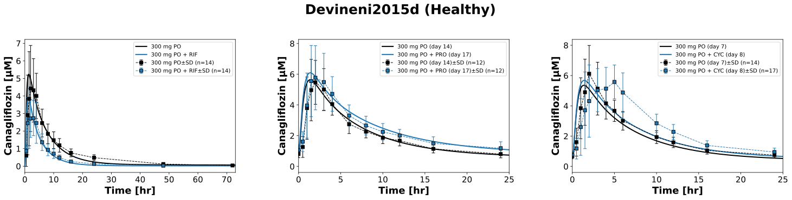
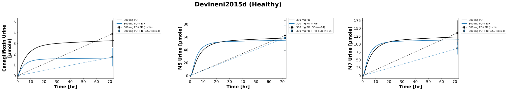
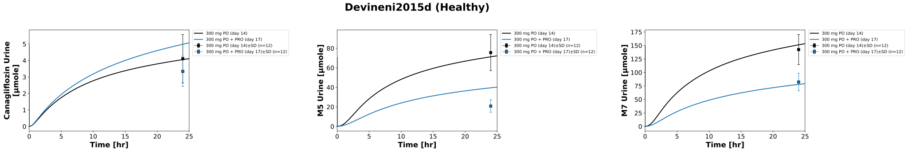

Overview
Models
| model | source |
|---|---|
| model | canagliflozin_body_flat.xml |
Datasets
Figures (3)






Code
"""Simulation experiment of the study Devineni2015d."""
from typing import ClassVar, NamedTuple, override
from pkpdsim.metadata import (
ApplicationForm,
Coadministration,
Dosing,
Fasting,
Health,
PKPDMappingMetaData,
Route,
Tissue,
)
from sbmlsim import Q
from sbmlsim.data import DataSet
from sbmlsim.fit import FitData, FitMapping
from sbmlsim.plot import Axis, Figure
from sbmlsim.simulation import Change, Simulation
from sbmlsim.units import Quantity
from pkdb_models.models.canagliflozin import MODEL
from pkdb_models.models.canagliflozin.experiments.base_experiment import (
CanagliflozinSimulationExperiment,
)
class Arm(NamedTuple):
"""An arm of the study: the data are of the last dose of canagliflozin."""
#: the key of the simulation
sim: str
#: the number of doses of canagliflozin 300 mg QD
doses: int
#: body weight [kg]
bodyweight: float
#: the coadministered drug, a key of `interactions` of the base
drug: str | None
#: the time of the start of the coadministered drug [hr] relative to the
#: first dose of canagliflozin
drug_start: float
coadministration: Coadministration
class Devineni2015d(CanagliflozinSimulationExperiment):
"""Simulation experiment of Devineni2015d.
Canagliflozin 300 mg in healthy subjects, fasted, with three
coadministered drugs, simulated with the activities of the enzymes and
transporters of `interactions` of the base (never fitted):
- study 1: a single dose alone (day 1) and with rifampicin 600 mg QD at
steady state (days 4-12, canagliflozin on day 10)
- study 2: QD on days 1-17, probenecid 500 mg BID on days 15-17; the data
are of day 14 (alone) and day 17 (with probenecid)
- study 3: QD on days 1-8, cyclosporine 400 mg 30 min before the dose of
day 8; the data are of day 7 (alone) and day 8 (with cyclosporine)
"""
arms: ClassVar[dict[str, Arm]] = {
"CAN300": Arm("can300_single", 1, 75.0, None, 0, Coadministration.NONE),
# induction at steady state, set from the start
"CAN300_RIF600": Arm(
"can300_rif600_single",
1,
75.0,
"rifampicin",
0,
Coadministration.RIFAMPICIN,
),
"CAN300_2": Arm("can300_2_multi", 14, 79.6, None, 0, Coadministration.NONE),
# probenecid from the dose of day 15
"CAN300_2_PRO500": Arm(
"can300_2_pro500_multi",
17,
79.6,
"probenecid",
14 * 24,
Coadministration.PROBENECID,
),
"CAN300_3": Arm("can300_3_multi", 7, 80.5, None, 0, Coadministration.NONE),
# cyclosporine 30 min before the dose of day 8
"CAN300_3_CYC400": Arm(
"can300_3_cyc400_multi",
8,
80.5,
"cyclosporine",
7 * 24 - 0.5,
Coadministration.CYCLOSPORINE,
),
}
#: the arms with urinary amounts: study 1 0-72 hr, study 2 0-24 hr
urine_groups: ClassVar[list[str]] = [
"CAN300",
"CAN300_RIF600",
"CAN300_2",
"CAN300_2_PRO500",
]
info: ClassVar[dict[str, str]] = {
"can": "canagliflozin",
"m5": "M5",
"m7": "M7",
}
fpg = 5 # [mM] (healthy)
@override
def datasets(self) -> dict[str, DataSet]:
dsets = {}
for fig_id in ["Fig2", "Fig3", "Fig4", "Tab2A", "Tab3A"]:
df = self.load_dataframe(fig_id)
if fig_id == "Tab3A":
# the start of the collection at the dose of day 14/17 is
# compared with the state before the reset, i.e. the urine of
# the day before
df = df[df["time"] > 0]
for label, df_label in df.groupby("label"):
label = str(label)
dset = DataSet.from_df(df_label, self.ureg)
# unit conversion to mole/l and mole; the urinary amounts of M5
# and M7 are % dose corrected for the molecular weight, i.e.
# canagliflozin equivalents
if label.startswith(("canagliflozin_", "M5_urine", "M7_urine")):
dset.unit_conversion("mean", 1 / self.Mr.can)
dsets[label] = dset
return dsets
def _dose_changes(self, arm: Arm, time: float) -> dict[str, Quantity]:
"""Get the changes at a dose of an arm.
The reset of the urine (collected from dose to dose) and the activities
of the coadministered drug; the dose itself adds to the dose state
(`add_doses`).
Args:
arm: the arm.
time: the time of the dose [hr] after the first dose.
Returns:
The changes by id.
"""
changes: dict[str, Quantity] = {
"Aurine_can": Q(0, "mmole"),
"Aurine_m5": Q(0, "mmole"),
"Aurine_m7": Q(0, "mmole"),
}
if arm.drug and time >= arm.drug_start:
changes.update(self.interaction_changes(arm.drug))
return changes
@override
def simulations(self) -> dict[str, Simulation]:
tcsims = {}
for arm in self.arms.values():
# the last dose of canagliflozin is at time 0
last = 24 * (arm.doses - 1)
changes = [
Change(24 * k, self._dose_changes(arm, 24 * k))
for k in range(1, arm.doses)
]
if arm.doses > 1:
changes.append(
self.add_doses(
[24 * k for k in range(1, arm.doses)],
{"PODOSE_can": Q(300, "mg")},
)
)
if arm.drug and arm.drug_start > 0 and arm.drug_start % 24:
changes.append(
Change(arm.drug_start, self.interaction_changes(arm.drug))
)
preinit_changes = {
**self.default_changes(),
"BW": Q(arm.bodyweight, "kg"),
"[KI__fpg]": Q(self.fpg, "mM"),
"PODOSE_can": Q(300, "mg"),
}
if arm.drug and arm.drug_start == 0:
preinit_changes.update(self.interaction_changes(arm.drug))
end = last + (73 if arm.doses == 1 else 25)
tcsims[f"po_{arm.sim}"] = Simulation(
time_unit="hr",
end=end,
preinit_changes=preinit_changes,
changes=changes,
time_shift=-last,
)
return tcsims
def _metadata(self, arm: Arm, tissue: Tissue) -> PKPDMappingMetaData:
"""Metadata of the mappings of an arm."""
return PKPDMappingMetaData(
tissue=tissue,
route=Route.PO,
application_form=ApplicationForm.TABLET,
dosing=Dosing.SINGLE if arm.doses == 1 else Dosing.MULTIPLE,
health=Health.HEALTHY,
fasting=Fasting.FASTED,
coadministration=arm.coadministration,
)
@override
def fit_mappings(self) -> dict[str, FitMapping]:
mappings = {}
for group, arm in self.arms.items():
mappings[f"fm_{group}_canagliflozin"] = FitMapping(
self,
reference=FitData(
self,
dataset=f"canagliflozin_{group}",
xid="time",
yid="mean",
yid_sd="mean_sd",
count="count",
),
observable=FitData(
self,
task=f"task_po_{arm.sim}",
xid="time",
yid="[Cve_can]",
),
metadata=self._metadata(arm, Tissue.PLASMA),
)
for group in self.urine_groups:
arm = self.arms[group]
for sid, name in self.info.items():
mappings[f"fm_{group}_{name}_urine"] = FitMapping(
self,
reference=FitData(
self,
dataset=f"{name}_urine_{group}",
xid="time",
yid="mean",
yid_sd="mean_sd",
count="count",
),
observable=FitData(
self,
task=f"task_po_{arm.sim}",
xid="time",
yid=f"Aurine_{sid}",
),
metadata=self._metadata(arm, Tissue.URINE),
)
return mappings
@override
def figures(self) -> dict[str, Figure]:
return self.figures_by_sid(
self._figure_plasma(),
self._figure_urine("Fig_urine_rif", ["CAN300", "CAN300_RIF600"]),
self._figure_urine("Fig_urine_pro", ["CAN300_2", "CAN300_2_PRO500"]),
)
arm_labels: ClassVar[dict[str, str]] = {
"CAN300": "300 mg PO",
"CAN300_RIF600": "300 mg PO + RIF",
"CAN300_2": "300 mg PO (day 14)",
"CAN300_2_PRO500": "300 mg PO + PRO (day 17)",
"CAN300_3": "300 mg PO (day 7)",
"CAN300_3_CYC400": "300 mg PO + CYC (day 8)",
}
arm_colors: ClassVar[dict[str, str]] = {
"CAN300": "black",
"CAN300_RIF600": "tab:blue",
"CAN300_2": "black",
"CAN300_2_PRO500": "tab:blue",
"CAN300_3": "black",
"CAN300_3_CYC400": "tab:blue",
}
def _figure_plasma(self) -> Figure:
"""Plasma concentrations without and with the coadministration."""
fig = Figure(
experiment=self,
sid="Fig_plasma",
num_rows=1,
num_cols=3,
name=f"{self.__class__.__name__} (Healthy)",
)
plots = fig.create_plots(
xaxis=Axis(self.label_time, unit=self.unit_time), legend=True
)
for k, groups in enumerate(
[
["CAN300", "CAN300_RIF600"],
["CAN300_2", "CAN300_2_PRO500"],
["CAN300_3", "CAN300_3_CYC400"],
]
):
plots[k].set_yaxis(self.label_can, unit=self.unit_can)
plots[k].set_xaxis(
self.label_time, unit=self.unit_time, min=0, max=73 if k == 0 else 25
)
for group in groups:
arm = self.arms[group]
# simulation
plots[k].add_data(
task=f"task_po_{arm.sim}",
xid="time",
yid="[Cve_can]",
label=self.arm_labels[group],
color=self.arm_colors[group],
)
# data
plots[k].add_data(
dataset=f"canagliflozin_{group}",
xid="time",
yid="mean",
yid_sd="mean_sd",
count="count",
label=self.arm_labels[group],
color=self.arm_colors[group],
)
return fig
def _figure_urine(self, sid: str, groups: list[str]) -> Figure:
"""Urinary amounts without and with the coadministration."""
fig = Figure(
experiment=self,
sid=sid,
num_rows=1,
num_cols=3,
name=f"{self.__class__.__name__} (Healthy)",
)
# the legends inside the panels cover data
fig.settings = {**fig.settings, "legend_position": "outside"}
plots = fig.create_plots(
xaxis=Axis(
self.label_time,
unit=self.unit_time,
min=0,
max=73 if self.arms[groups[0]].doses == 1 else 25,
),
legend=True,
)
plots[0].set_yaxis(self.label_can_urine, unit=self.unit_can_urine)
plots[1].set_yaxis(self.label_m5_urine, unit=self.unit_m5_urine)
plots[2].set_yaxis(self.label_m7_urine, unit=self.unit_m7_urine)
for k, (substance, name) in enumerate(self.info.items()):
for group in groups:
arm = self.arms[group]
# simulation
plots[k].add_data(
task=f"task_po_{arm.sim}",
xid="time",
yid=f"Aurine_{substance}",
label=self.arm_labels[group],
color=self.arm_colors[group],
)
# data
plots[k].add_data(
dataset=f"{name}_urine_{group}",
xid="time",
yid="mean",
yid_sd="mean_sd",
count="count",
label=self.arm_labels[group],
color=self.arm_colors[group],
)
return fig
if __name__ == "__main__":
MODEL.run_experiments(Devineni2015d, output_dir=Devineni2015d.__name__)